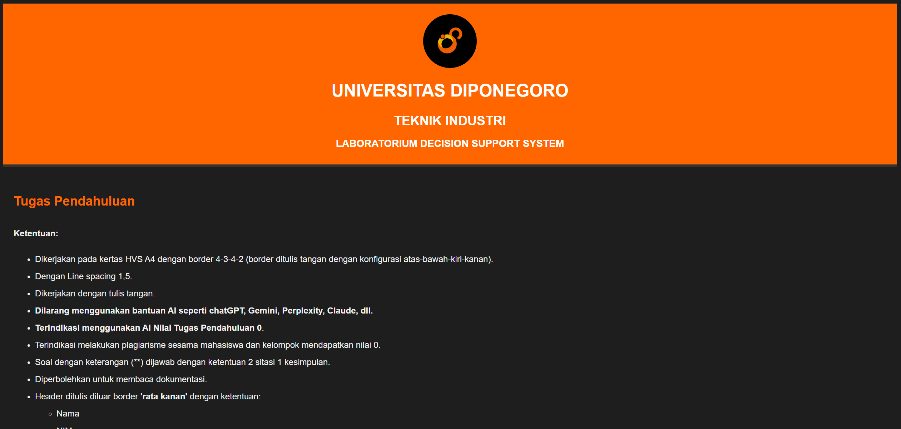
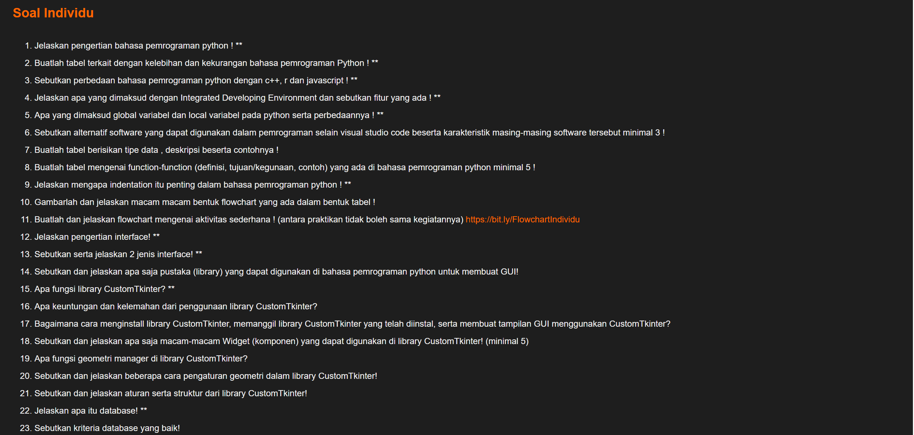
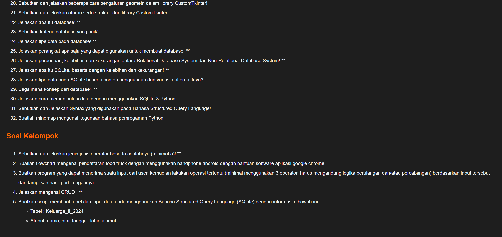

<div id="portfolio-page" class="portfolio-page-content">
    <div class="portfolio-page-wrapper">
        <div class="portfolio-page-nav">
            <div class="nav-item portfolio-page-prev-next">
                <a class="ajax-page-load" href="portfolio-project-modul-logpem.html"><i class="lnr lnr-chevron-left"></i></a>
                <a class="ajax-page-load" href="portfolio-project-data-mining.html"><i class="lnr lnr-chevron-right"></i></a>
            </div>
            <div class="nav-item portfolio-page-close-button">
                <a id="portfolio-page-close-button" href="#"><i class="lnr lnr-cross"></i></a>
            </div>
        </div>

        <div class="portfolio-page-title">
            <h1>Pengembangan Website Praktikum</h1>
        </div>

        <div class="row">
            <div class="col-sm-8 col-md-8 portfolio-block">
                <div class="owl-carousel portfolio-page-carousel">
                    <div class="item">
                        
                    </div>
                    <div class="item">
                        
                    </div>
                    <div class="item">
                        
                    </div>
                </div>
                <div class="deskripsi-tambahan">
                    <p>
                        Website ini dirancang sebagai platform pusat soal pendahuluan yang dapat diakses secara praktis dan terpusat oleh para praktikan. Dengan adanya website ini, praktikan dapat melihat daftar dan isi soal secara langsung kapan saja tanpa perlu menunggu distribusi dari asisten, sehingga proses pengerjaan tugas menjadi lebih efisien.
                    </p>

                    <p>
                        Bagi asisten laboratorium, website ini juga memberikan manfaat yang signifikan. Mereka tidak perlu lagi membuat ulang atau mencari soal setiap semester. Cukup dengan mengunggah dan mempublikasikan soal yang telah disiapkan, soal tersebut dapat digunakan kembali untuk praktikan tahun-tahun berikutnya.
                    </p>

                    <p>
                        Selain itu, website ini dirancang secara responsif sehingga dapat diakses melalui berbagai perangkat, seperti PC, laptop, tablet, maupun ponsel. Hal ini mendukung fleksibilitas penggunaan baik di dalam maupun di luar laboratorium. 
                    </p>

                    <p>
                        Ke depannya, platform ini memiliki potensi untuk dikembangkan lebih lanjut, seperti penambahan fitur dasbor khusus untuk asisten. Fitur ini dapat memudahkan pengelolaan soal secara lebih sistematis dan memungkinkan pelacakan statistik penggunaan serta jumlah kunjungan praktikan setiap semester.
                    </p>
                </div>

                <script type="text/javascript">
                    jQuery(document).ready(function($){
                        $('.portfolio-page-carousel').imagesLoaded(function(){
                            $('.portfolio-page-carousel').owlCarousel({
                                smartSpeed:1200,
                                items: 1,
                                loop: true,
                                dots: true,
                                nav: true,
                                navText: false,
                                margin: 10,
                                autoHeight:true
                            });
                        });
                    });
                </script>
            </div>

            <div class="col-sm-4 col-md-4 portfolio-block">
                <!-- Project Description -->
                <div class="project-description">
                    <div class="block-title">
                        <h3>Description</h3>
                    </div>
                    <ul class="project-general-info">
                        <li><p><i class="lnr lnr-user"></i>Nurlintang Asriono Sudarmawan</p></li>
                        <li><p><i class="lnr lnr-link"></i> <a href="https://nurlintang.github.io/Tupen_keluarga24/website_tupen.html" target="_blank"> > lihat website disini</a></p></li>
                        <li><p><i class="lnr lnr-calendar-full"></i> 13 april, 2025</p></li>
                    </ul>

                    <p class="text-justify">Pembuatan website ini dilakukan untuk memenuhi kebutuhan kegiatan praktikum pada laboraturium Decision Support System.</p>
                    <!-- /Project Description -->

                    <!-- Technology -->
                    <div class="tags-block">
                        <div class="block-title">
                            <h3>Technology</h3>
                        </div>
                        <ul class="tags">
                            <li><a>HTML5</a></li>
                            <li><a>CSS3</a></li>
                            <li><a>javascript</a></li>
                        </ul>
                    </div>
                    <!-- /Technology -->

                     <!-- Skill -->
                    <div class="tags-block">
                        <div class="block-title">
                            <h3>Skill</h3>
                        </div>
                        <ul class="tags">
                            <li><a>Website Development</a></li>
                            <li><a>UI/UX</a></li>
                            <li><a>Attention to Detail</a></li>
                        </ul>
                    </div>
                    <!-- /skill -->
                     
                </div>
                <!-- Project Description -->
            </div>
        </div>
    </div>
</div>
